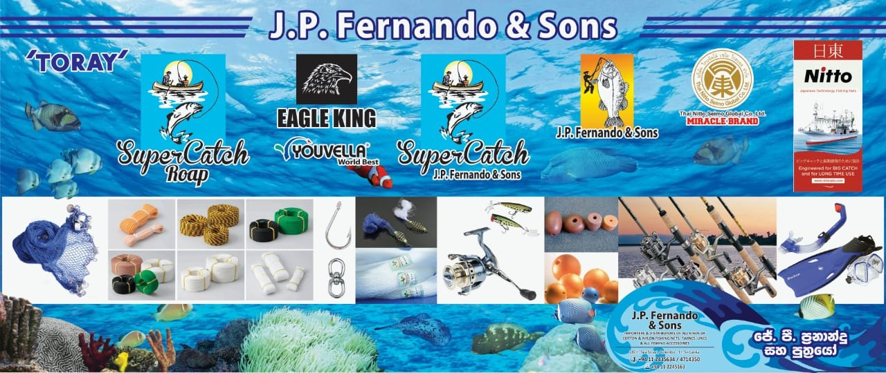

Seven decades
on Sea Street.
Manufacturers, importers and distributors of all kinds of nylon and cotton fishing nets, twines, lines and fishing accessories — and the pioneers of imported fishing nets in Sri Lanka since 1953.
ජේ. පී. ප්රනාන්දු සහ පුත්රයෝ

A story told in knots.
From the first imported nets to our own SuperCatch brand — the milestones that made us.
The pioneer
J.P. Fernando & Sons was founded in 1953 and became the pioneer in distributing imported fishing nets and accessories in Sri Lanka.
Agent for world-renowned brands
The company grew into importing and distributing agent for Nichimen Corporation, Japan, Miracle Brand, Japan and Namayang Corporation, Korea — among the most popular and leading brands in the island for decades.
Quality First
Guided by its “Quality First” principle, the company became the leading and most reputed fishing-gear distributor in Sri Lanka through the 1970s, 80s and early 90s, when most customers wanted premium-quality products only.
Making our own
As local economic conditions changed and production costs rose in Japan and Korea, we began distributing leading Indian fishing-net brands — and manufacturing our own brands locally, using the latest Japanese machines.
Sole agent for TORAY Japan
Our Quality First principle led us to use TORAY Japan yarn in all our net brands. J.P. Fernando & Sons was then appointed sole agent and single distributor of TORAY products in Sri Lanka.
A leader in Sri Lankan fishing nets
Today J.P. Fernando & Sons is a leader in Sri Lanka's fishing-net market, and SuperCatch and J.P. Fernando & Sons are among the most popular quality brands in the country.
Quality first. Then everything else.
It is why we chose the finest fishing-net yarn we know for our own brands, and why fishermen across the island have relied on our nets for generations.
Island-wide network
Successful participation in and completion of government tenders for the Ministry of Fisheries and Aquatic Resources highlighted the standard and capacity of our distribution network across the entire island.
Local manufacturing
Our own net brands are manufactured in Sri Lanka on the latest Japanese machines, using TORAY Japan nylon yarn.
Nets, lines & more
From nylon nets we expanded into manufacturing and distributing fishing lines, HDPE nets, nylon yarn, twine and fishing accessories.
Dinesh Fernando
Partner 287/1 Sea StreetColombo 11
Sri Lanka
“We are delighted to present our company to you, and we look forward to serving you in the near future.”
Tell us what you need.
Send us the product, size and quantity — we'll come back with availability and a quotation.
Request a quotation Call +94 76 707 9587